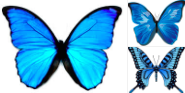
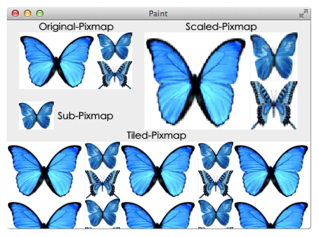

Pixmap 的绘制有下面四种方式（每种方式都有几个重载的函数，没有全部列举出来）：
在指定位置绘制 pixmap，pixmap 不会被缩放
1
2
3/* pixmap 的左上角和 widget 上 x, y 处重合 */
void QPainter::drawPixmap(int x, int y, const QPixmap & pixmap)
void QPainter::drawPixmap(const QPointF &point, const QPixmap &pixmap)在指定的矩形内绘制 pixmap，pixmap 被缩放填充到此矩形内
1
2
3/* target 是 widget 上要绘制 pixmap 的矩形区域 */
void QPainter::drawPixmap(int x, int y, int width, int height, const QPixmap &pixmap)
void QPainter::drawPixmap(const QRect &target, const QPixmap &pixmap)绘制 pixmap 的一部分，可以称其为 sub-pixmap
1
2
3
4
5/* source 是 sub-pixmap 的 rectangle */
void QPainter::drawPixmap(const QPoint &point, const QPixmap &pixmap, const QRect &source)
void QPainter::drawPixmap(const QRect &target, const QPixmap &pixmap, const QRect &source)
void QPainter::drawPixmap(int x, int y, const QPixmap &pixmap,
int sx, int sy, int sw, int sh)平铺绘制 pixmap，水平和垂直方向都会同时使用平铺的方式
1
2
3
4
5
6void QPainter::drawTiledPixmap(const QRect &rectangle,
const QPixmap &pixmap,
const QPoint &position = QPoint())
void QPainter::drawTiledPixmap(int x, int y, int width, int height,
const QPixmap & pixmap,
int sx = 0, int sy = 0)drawTiledPixmap() 比我们自己计算 pixmap 的长宽，然后重复的绘制实现平铺的效率高一些：Calling drawTiledPixmap() is similar to calling drawPixmap() several times to fill (tile) an area with a pixmap, but is potentially much more efficient depending on the underlying window system.

使用上面这张图来演示 drawPixmap() 的各种用法，左上角绘制原始大小的 pixmap，右上角缩放绘制 pixmap 到指定的矩形内 QRect(225, 20, 250, 159)，中间绘制 sub-pixmap，底部则使用平铺的方式绘制，最后结果如下图（文字是标记上去帮助理解的）：

1 | void PixmapWidget::paintEvent(QPaintEvent *) { |